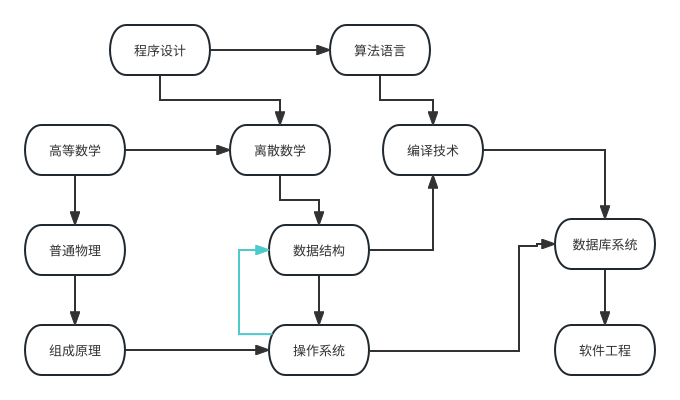
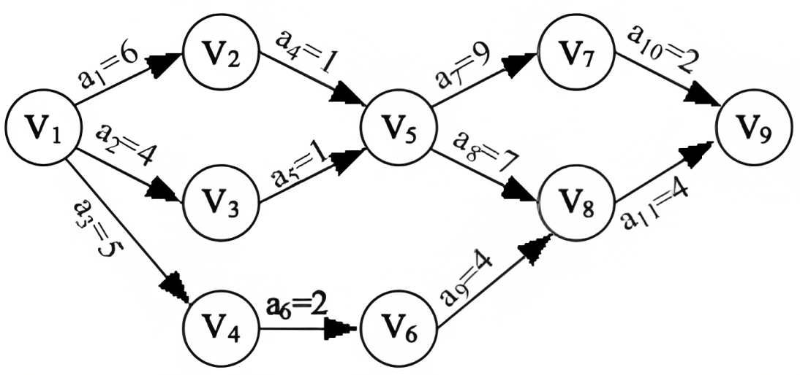

Topo
定义
拓扑排序（Topological sorting）要解决的问题是如何给一个有向无环图的所有节点排序．
我们可以拿大学每学期排课的例子来描述这个过程，比如学习大学课程中有：「程序设计」，「算法语言」，「高等数学」，「离散数学」，「编译技术」，「普通物理」，「数据结构」，「数据库系统」等．按照例子中的排课，当我们想要学习「数据结构」的时候，就必须先学会「离散数学」，学习完这门课后就获得了学习「编译技术」的前置条件．当然，「编译技术」还有一个更加前的课程「算法语言」．这些课程就相当于几个顶点 $u$, 顶点之间的有向边 $(u,v)$ 就相当于学习课程的顺序．教务处安排这些课程，使得在逻辑关系符合的情况下排出课表，就是拓扑排序的过程．

但是如果某一天排课的老师打瞌睡了，说想要学习 数据结构，还得先学 操作系统，而 操作系统 的前置课程又是 数据结构，那么到底应该先学哪一个（不考虑同时学习的情况）？在这里，数据结构 和 操作系统 间就出现了一个环，显然同学们现在没办法弄清楚自己需要先学什么了，也就没办法进行拓扑排序了．因为如果有向图中存在环路，那么我们就没办法进行拓扑排序．
因此我们可以说 在一个 DAG（有向无环图） 中，我们将图中的顶点以线性方式进行排序，使得对于任何的顶点 $u$ 到 $v$ 的有向边 $(u,v)$, 都可以有 $u$ 在 $v$ 的前面．
还有给定一个 DAG，如果从 $i$ 到 $j$ 有边，则认为 $j$ 依赖于 $i$．如果 $i$ 到 $j$ 有路径（$i$ 可达 $j$），则称 $j$ 间接依赖于 $i$．
拓扑排序的目标是将所有节点排序，使得排在前面的节点不能依赖于排在后面的节点．
AOV 网
日常生活中，一项大的工程可以看作是由若干个子工程组成的集合，这些子工程之间必定存在一定的先后顺序，即某些子工程必须在其他的一些子工程完成后才能开始．
我们用有向图来表现子工程之间的先后关系，子工程之间的先后关系为有向边，这种有向图称为顶点活动网络，即 AOV 网 (Activity On Vertex Network)．一个 AOV 网必定是一个有向无环图，即不带有回路．与 DAG 不同的是，AOV 的活动都表示在顶点上．（上面的例图即为一个 AOV 网）
在 AOV 网中，顶点表示活动，弧表示活动间的优先关系．AOV 网中不应该出现环，这样就能够找到一个顶点序列，使得每个顶点代表的活动的前驱活动都排在该顶点的前面，这样的序列称为拓扑序列（一个 AOV 网的拓扑序列不是唯一的），由 AOV 网构造拓扑序列的过程称为拓扑排序．因此，拓扑排序也可以解释为将 AOV 网中所有活动排成一个序列，使得每个活动的前驱活动都排在该活动的前面（一个 AOV 网中的拓扑排序也不是唯一的）．
-
前驱活动：有向边起点的活动称为终点的前驱活动（只有当一个活动的前驱全部都完成后，这个活动才能进行）．
-
后继活动：有向边终点的活动称为起点的后继活动．
检测 AOV 网中是否带环的方式是构造拓扑序列，看是否包含所有顶点．
构造拓扑序列步骤
- 从图中选择一个入度为零的点．
- 输出该顶点，从图中删除此顶点及其所有的出边．
重复上面两步，直到所有顶点都输出，拓扑排序完成，或者图中不存在入度为零的点，此时说明图是有环图，拓扑排序无法完成，陷入死锁．
关键路径和 AOE 网
与 AOV 网对应的是 AOE 网（Activity On Edge Network) 即边表示活动的网．AOE 网是一个带权的有向无环图，其中，顶点表示事件，弧表示活动持续的时间．通常，AOE 网可以用来估算工程的完成时间．AOE 网应该是无环的，且存在唯一入度为零的起始顶点（源点），以及唯一出度为零的完成顶点（汇点）．

AOE 网中的有些活动是可以并行进行的，所以完成整个工程的最短时间是从开始点到完成点的最长活动路径长度（这里所说的路径长度是指路径上各活动的持续时间之和，即弧的权值之和，不是路径上弧的数目）．因为一项工程需要完成所有工程内的活动，所以最长的活动路径也是关键路径，它决定工程完成的总时间．
AOE 网的相关基本概念
-
活动：AOE 网中，弧表示活动．弧的权值表示活动持续的时间，活动在其前驱事件（即该弧的起点）被触发后开始．
-
事件：AOE 网中，顶点表示事件，事件在它的所有前驱活动（即指向该边的弧）全部完成被触发．
-
事件（顶点）$v_i$ 的最早发生时间：该事件最早可能的发生时间，记为 $ve(i)$，它决定了以该顶点开始的活动的最早发生时间，显然源点的的最早发生时间为 0．因为事件发生需要其所有前驱活动全部完成，所以它等于初始点到该顶点的路径长度的最大值，写成递推：$ve(i) = \max{ve(j) + val^j_i ~\vert~ j \in pre_i}$，其中 $val^j_i$ 表示 j 到 i 的边的权值（即 j 到 i 的活动的持续时间），$pre_i$ 表示 i 的所有前驱事件的集合．
-
事件（顶点）$v_i$ 的最迟发生时间：在不推迟整个工期的前提下，该事件最晚能容忍的发生时间，记为 $vl(i)$，它决定了所有以该状态结束的活动的最迟发生时间，它等于事件的所有后继活动的最迟开始时间的最小值，即 $vl(i) = \min{vl(j) - val^i_j ~\vert~ j \in nxt_i}$，其中 $val^i_j$ 表示 i 到 j 的边的权值（即 i 到 j 的活动的持续时间），$nxt_i$ 表示 i 的所有后驱事件的集合．
-
活动（弧）$(u, v)$ 的最早开始时间：该活动最早可能的发生时间，记为 $e(u,v)$，显然，它等于其前驱事件的最早发生时间，即 $e(u,v)=ve(u)$．
-
活动（弧）$(u, v)$ 的最迟开始时间：在不推迟整个工期的前提下，活动开始最晚能容忍的时间，记为 $l(u,v)$，它等于其后继事件的最迟发生时间 - 该事件的持续时间（权值），即 $l(u,v)=vl(v)-val^u_v$，其中 $val^u_v$ 表示 u 到 v 的边的权值（即 u 到 v 的活动的持续时间）．
-
关键路径：AOE 网中从源点到汇点的最长路径的长度．
-
关键活动：即关键路径上的活动，它的最早开始时间和最迟开始时间相等．
递推求最早和最迟发生时间
按拓扑顺序求，最早发生时间从前往后递推，最迟发生时间从后往前递推，递推公式如上 AOE 网的相关基本概念 所示．
Kahn 算法
过程
初始状态下，集合 $S$ 装着所有入度为 $0$ 的点，$L$ 是一个空列表．
每次从 $S$ 中取出一个点 $u$（可以随便取）放入 $L$, 然后将 $u$ 的所有边 $(u, v_1), (u, v_2), (u, v_3) \cdots$ 删除．对于边 $(u, v)$，若将该边删除后点 $v$ 的入度变为 $0$，则将 $v$ 放入 $S$ 中．
不断重复以上过程，直到集合 $S$ 为空．检查图中是否存在任何边，如果有，那么这个图一定有环路，否则返回 $L$，$L$ 中顶点的顺序就是构造拓扑序列的结果．
首先看来自 Wikipedia 的伪代码
???+ note "实现"
text
L ← Empty list that will contain the sorted elements
S ← Set of all nodes with no incoming edges
while S is not empty do
remove a node n from S
insert n into L
for each node m with an edge e from n to m do
remove edge e from the graph
if m has no other incoming edges then
insert m into S
if graph has edges then
return error (graph has at least one cycle)
else
return L (a topologically sorted order)
代码的核心是维持一个入度为 0 的顶点的集合．
可以参考该图
对其排序的结果就是：2 -> 8 -> 0 -> 3 -> 7 -> 1 -> 5 -> 6 -> 9 -> 4 -> 11 -> 10 -> 12
时间复杂度
假设这个图 $G = (V, E)$ 在初始化入度为 $0$ 的集合 $S$ 的时候就需要遍历整个图，并检查每一条边，因而有 $O(E+V)$ 的复杂度．然后对该集合进行操作，显然也是需要 $O(E+V)$ 的时间复杂度．
因而总的时间复杂度就有 $O(E+V)$
实现
=== "C++"
```cpp
int n, m;
vector
bool toposort() {
vector<int> L;
queue<int> S;
for (int i = 1; i <= n; i++)
if (in[i] == 0) S.push(i);
while (!S.empty()) {
int u = S.front();
S.pop();
L.push_back(u);
for (auto v : G[u]) {
if (--in[v] == 0) {
S.push(v);
}
}
}
if (L.size() == n) {
for (auto i : L) cout << i << ' ';
return true;
}
return false;
}
```
=== "Python" ```python from collections import defaultdict, deque
def topo_sort(graph):
lst = []
in_degree = defaultdict(int)
for u in graph:
for v in graph[u]:
in_degree[v] += 1
s = deque([u for u in graph if in_degree[u] == 0])
while s:
u = s.popleft()
lst.append(u)
for v in graph.get(u, []):
in_degree[v] -= 1
if in_degree[v] == 0:
s.append(v)
return None if any(in_degree.values()) else lst
```
DFS 算法
实现
=== "C++"
```cpp
using Graph = vector
struct TopoSort {
enum class Status : uint8_t { to_visit, visiting, visited };
const Graph& graph;
const int n;
vector<Status> status;
vector<int> order;
vector<int>::reverse_iterator it;
TopoSort(const Graph& graph)
: graph(graph),
n(graph.size()),
status(n, Status::to_visit),
order(n),
it(order.rbegin()) {}
bool sort() {
for (int i = 0; i < n; ++i) {
if (status[i] == Status::to_visit && !dfs(i)) return false;
}
return true;
}
bool dfs(const int u) {
status[u] = Status::visiting;
for (const int v : graph[u]) {
if (status[v] == Status::visiting) return false;
if (status[v] == Status::to_visit && !dfs(v)) return false;
}
status[u] = Status::visited;
*it++ = u;
return true;
}
};
```
=== "Python" ```python from enum import Enum, auto
class Status(Enum):
to_visit = auto()
visiting = auto()
visited = auto()
def topo_sort(graph: list[list[int]]) -> list[int] | None:
n = len(graph)
status = [Status.to_visit] * n
order = []
def dfs(u: int) -> bool:
status[u] = Status.visiting
for v in graph[u]:
if status[v] == Status.visiting:
return False
if status[v] == Status.to_visit and not dfs(v):
return False
status[u] = Status.visited
order.append(u)
return True
for i in range(n):
if status[i] == Status.to_visit and not dfs(i):
return None
return order[::-1]
```
时间复杂度：$O(E+V)$ 空间复杂度：$O(V)$
合理性证明
考虑一个图，删掉某个入度为 $0$ 的节点之后，如果新图可以拓扑排序，那么原图一定也可以．反过来，如果原图可以拓扑排序，那么删掉后也可以．
应用
拓扑排序可以判断图中是否有环，还可以用来判断图是否是一条链．拓扑排序可以用来求 AOE 网中的关键路径，估算工程完成的最短时间．
求字典序最大/最小的拓扑排序
将 Kahn 算法中的队列替换成最大堆/最小堆实现的优先队列即可，此时总的时间复杂度为 $O(E+V \log{V})$．
习题
CF 1385E：需要通过拓扑排序构造．
Luogu P1347: 拓扑排序模板．
参考
- 离散数学及其应用．ISBN:9787111555391
- Topological sorting - Wikipedia
- 数据结构第九讲（图：拓扑排序，关键路径，最短路径）- 知乎专栏